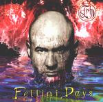

| Artist: | Fish |
| Title: | Fellini Days |
| Label: | Chocolate Frog Records CFVP007CD |
| Length(s): | 57 minutes |
| Year(s) of release: | 2001 |
| Month of review: | [11/2001] |
| 1) | 3D | 9.11 |
| 2) | So Fellini | 4.06 |
| 3) | Tiki 4 | 7.32 |
| 4) | Our Smile | 5.25 |
| 5) | Long Cold Day | 5.33 |
| 6) | Dancing In Fog | 5.30 |
| 7) | Obligatory Ballad | 5.15 |
| 8) | The Pilgrim's Address | 7.18 |
| 9) | Clock Moves Sideways | 7.17 |
The band keeps on rocking away on the another terrific track: So Fellini. The style is recognizably Fish (not just the voice, but the song as well), but it seems the sound has been updated and the songs are good with appealing melodies and plenty of verve and a full sound spectrum. The Led Zeppelin feel stays (which contrasts nicely with the updated sound). Soundwise, it seems that Fish includes more noise sounds, more sharper edges than on most of the previous albums.
Tiki 4 is a more percussive track, but the guitar sound continues to be rather noisy. The song has this easy-going gait, the melody is a bit less enticing than the ones on the earlier tracks. But on the whole it is still a nice track with a bit of world feel due to the role of percussion.
Our Smile is an easy-going ballad with piano and a hazy guitar and keyboard sound. On the whole the song itself comes off hazy ad well and I like the effect. Long Cold Day rocks away again with some sharp and at times dissonant guitar work from John Wesley.
Dancing In Fog has very melodic vocals, but has a rather dark feel. The rhythms are again rather jumpy and "modern". As on most tracks female vocals lace the vocals of Fish (and Fellini pops up now and then). The guitar playing is again very edgy.
The next one up is Obligartory Ballad with some Beatlesque keyboards (think Strawberry Fields) and some stringy synths. The soft spoken vocals of Fish are accompanied, shadowed almost, but intense notes on guitar. The organ gives the song a strong vibe.
The Pilgrim's Address opens with strumming acoustic guitar. What I thought was a low organ sound in the back, turns out to be the roll of a film running through a projector. After an acoustic verse, the music becomes more forceful, the melodies stay the same. Although the music is ratehr straightforward, it builds up strongly towards the end. And with Afghanistan at the moment the talk of smart bombs is something that fits in well. The keyboards toward the end bring in a bit of a Scottish (bagpipe) feel into the music. The chaotic vocals at the end reminded me a bit of I Am The Walrus.
Closer is Clock Moves Sideways. This is a very good track in which all the ingredients of the previous tracks come together again. Notice the "Fugazi", and the Auld Lang Syne citation in this song? (Striking coincidence with the Chelsea Monday citation on Anoraknophobia...) A worthy conclusion as the film winds down.
As always, with Fish's lyrics I get the impression that all he writes is about himself, making you a part of his life, letting you in on his secrets. This was always what attracted me to him in Marillion and it holds on this album as well.